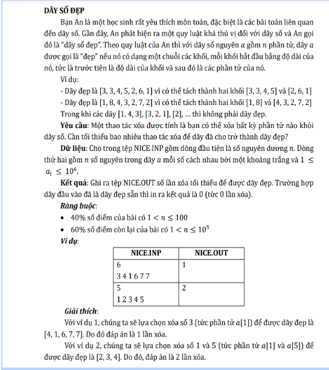

CHƯƠNG V: MỘT SỐ KĨ THUẬT KHÁC
DP tương lai
Có một số bài chúng ta thay vì tính mảng dp thông qua kết quả trước thì ta tính tại vị trí dp hiện tại ta cập nhật cho dp phía trước thì sẽ thuận tiện hơn. Sau đây là ví dụ của một bài toán.

Ý tưởng:
Gọi dp[i] là số phần tử phủ xóa ít nhất để i số đầu là dãy đẹp. Xét trường hợp ta nhận thấy:
-
Trường hợp 1: Xóa a[i] + 1
dp[i + 1] = min(dp[i + 1], dp[i] + 1)
-
Trường hợp 2: Giữ a[i] + 1
dp[i + a[i] + 1] = min(dp[i + a[i] + 1], dp[i])
Đáp án cho mỗi dp[l][r][k] = max của cả 5 trường hợp đó
-> dp[l][r][k] = ans
CODE
dp[0] = 0;
for(int i = 0; i <= n; i++){
dp[i + 1] = min(dp[i + 1], dp[i] + 1);
if(i + a[i + 1] + 1 <= n)
dp[i + a[i + 1] + 1] = min(dp[i + a[i + 1] + 1], dp[i]);
}
cout << dp[n];
Như vậy, từ dp[i] ta có thể tính cho dp[i + 1] hoặc dp[i + a[i + 1] + 1] cho bài toán này.
DP con lắc
Thỉnh thoảng các bài toán của bạn không đủ bộ nhớ cho việc tính toán mà đặc điểm bài toán quy hoạch động lại tính trên kết quả có sẵn thì sử dụng kĩ thuật “con lắc”. Sau đây là ví dụ cho bài Knapsack. Thông thường, ta có dp[i][j] là xét đồ vật thứ i với giá trị j và tính dựa trên dp[i - 1][j - w[i]] hoặc dp[i - 1][j]. Thay vì cứ tốn nhiều ô nhớ cho i - 1 thì ta tối ưu bằng cách chỉ tính kết quả gần nhất. Vì vậy mảng dp chỉ còn ô nhớ dp[2][W].
i % 2 == 0 -> dp[0][j] = max(dp[1][j], dp[1][j - w[i]])
i % 2 == 1 -> dp[1][j] = max(dp[0][j], dp[0][j - w[i]])